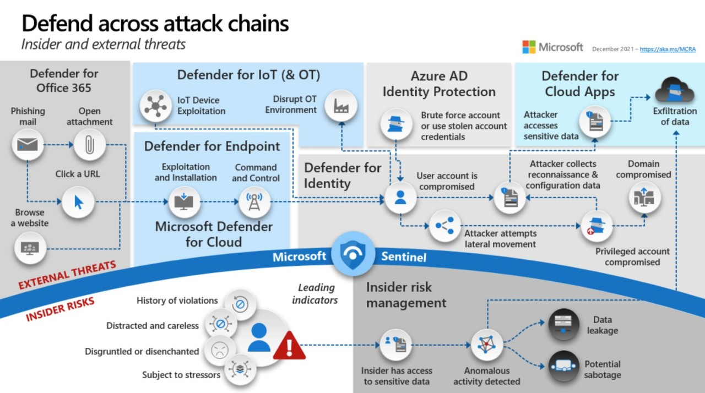
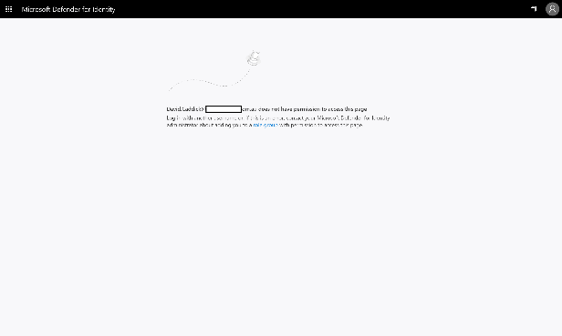
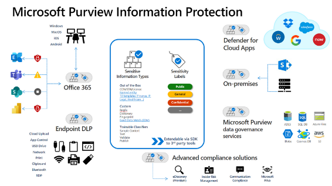

Get Security Done (GSD) - Microsoft Security & M365 Defender
Quick wins to improve Security using existing entitlements
Bottom line:
Ideally this page will be highlighting how to get the best out of both your M365 E5 security and compliance entitlements. What is the best way to step lightly thru this and gain maximum benefit for the least effort? Most of the focus here is more on the M365 SaaS Security platform elements, not necessarily on Sentinel or Azure, but there will be plenty of crossover.

Core reference material:
- Microsoft Cybersecurity Reference Architecture -- https://aka.ms/MCRA
- Security collateral inc. CISO Workshops, and lots more -- https://aka.ms/MarksList
- Please - if you haven't come across these two links above before now - go and review and come back after
- ASD Essential 8 Security controls - Microsoft Whitepaper - http://aka.ms/e8guides
- Everything regards M365 Features and Licensing - Feature Matrix | M365 Maps
- Aaron Dinnage, Microsoft Canberra
- Plan comparison in detail - https://aka.ms/M365EnterprisePlans
Incident Response:
- CISO Lens Incident Response Template - November 2022 https://www.cisolens.com/reports#h.a769cex3vkl
- ACSC Exercise in a box https://www.cyber.gov.au/exercise-in-a-box
- Standardised Executive Reporting - an industry report from the CISO Lens community (June 2022) https://www.cisolens.com/reports#h.z10davb23frq
Still to do:
- [ ] Fix Tables
- [ ] Assumed knowledge
- [ ] Acronym Table?
- [ ] Short paragraph on each heading - Preview at top or separate tab?
- [x] ToC/Index
- [ ] Add new Theme - https://github.com/byrnereese/mkdocs-bootstrap4
- [ ] Shadow Hunter & In to the Breach - Immersive workshops for SecOps
- [ ] Zero Trust - https://techcommunity.microsoft.com/t5/core-infrastructure-and-security/creating-mfa-policies-with-zero-trust-advanced-deployment-guide/ba-p/3688849
- [ ] MIP/AIP - https://techcommunity.microsoft.com/t5/security-compliance-and-identity/azure-information-protection-and-the-information-protection/ba-p/3671070
- Adaptive Protection (DLP rules based on Insider Risk)
- Login as GA (or eqiv.) - https://admin.microsoft.com/adminportal/home?#/modernonboarding/mipsetupguide

- Docs - https://learn.microsoft.com/en-gb/microsoft-365/compliance/information-protection
- DLP - https://learn.microsoft.com/en-gb/microsoft-365/compliance/dlp-learn-about-dlp
- What's new - https://learn.microsoft.com/en-gb/microsoft-365/compliance/whats-new
M365 Defender Console:
- Evaluate Defender 365: https://learn.microsoft.com/en-gb/microsoft-365/security/defender/eval-overview
- Good step by step guide to getting everything turned on - but it is aimed at folks just starting
- Test Use Cases: https://learn.microsoft.com/en-gb/microsoft-365/security/defender/integrate-microsoft-365-defender-secops-use-cases
- SOC Maintenance Tasks: https://learn.microsoft.com/en-gb/microsoft-365/security/defender/integrate-microsoft-365-defender-secops-tasks
MDI (Microsoft Defender for Identity):
- Go to https://portal.atp.azure.com and if you see this, it's not been installed 
- Use Attack Simulations to validate MDI is installed correctly and Alerts are being surfaced accurately: https://learn.microsoft.com/en-us/defender-for-identity/playbooks
- Use Labs for in depth checking: https://learn.microsoft.com/en-us/defender-for-identity/playbook-lab-overview
- https://learn.microsoft.com/en-us/defender-for-identity/playbook-domain-dominance
- Review Security Assessments to validate what potentially needs remediation: https://learn.microsoft.com/en-us/defender-for-identity/security-assessment#assessment-reports
- Full list of the 44 Alerts that are being checked on your behalf when fully deployed: https://learn.microsoft.com/en-us/defender-for-identity/alerts-overview
- If you do not use the default Administrator account (ideally have it disabled?) then please add it to the Honeytoken account list: https://learn.microsoft.com/en-us/defender-for-identity/entity-tags#honeytoken-tags
- https://thalpius.com/2022/12/14/microsoft-defender-for-identity-auditing-checker-using-sentinel
Troubleshooting:
- https://learn.microsoft.com/en-us/defender-for-identity/troubleshooting-known-issues
- https://learn.microsoft.com/en-us/defender-for-identity/troubleshooting-using-logs
MDCA (Microsoft Defender for Cloud Apps, was MCAS):
Bad Image Good Image

-
Troubleshooting
https://learn.microsoft.com/en-us/defender-cloud-apps/troubleshooting-cloud-discovery
- Tune the system: https://learn.microsoft.com/en-us/defender-cloud-apps/tutorial-suspicious-activity
- Tell it what the Corporate IP address's are: https://learn.microsoft.com/en-us/defender-cloud-apps/ip-tags
- Set the IP's in bulk if needed: https://learn.microsoft.com/en-us/defender-cloud-apps/api-data-enrichment-manage-script
- Best Practices: https://learn.microsoft.com/en-us/defender-cloud-apps/best-practices
- Daily Activities: https://learn.microsoft.com/en-us/defender-cloud-apps/daily-activities-to-protect-your-cloud-environment
- Apps list
- Sanctioned/Unsanctioned
- Don't forget this is based on MDE
Intune - MDE (Microsoft Defender for Endpoint):
- Easy starting point, step-by-step guide: https://learn.microsoft.com/en-us/mem/solutions/cloud-native-endpoints/cloud-native-windows-endpoints
- Ideally start with Security Baselines: https://endpoint.microsoft.com/#view/Microsoft_Intune_Workflows/SecurityManagementMenu/~/securityBaselines
These are updated every 6 months and you'll be prompted to update/accept changes
 - ASR rules deployment steps: https://learn.microsoft.com/en-us/microsoft-365/security/defender-endpoint/attack-surface-reduction-rules-deployment
- If needed import your old GPO's: https://endpoint.microsoft.com/#view/Microsoft_Intune_DeviceSettings/DevicesMenu/~/policyAnalyticsReport
- ASR rules deployment steps: https://learn.microsoft.com/en-us/microsoft-365/security/defender-endpoint/attack-surface-reduction-rules-deployment
- If needed import your old GPO's: https://endpoint.microsoft.com/#view/Microsoft_Intune_DeviceSettings/DevicesMenu/~/policyAnalyticsReport
MDE (Microsoft Defender for Endpoint):
- Consider enabling Block at First Sight from AV: https://learn.microsoft.com/en-us/microsoft-365/security/defender-endpoint/configure-block-at-first-sight-microsoft-defender-antivirus
- Block at First Sight - test/demo: https://demo.wd.microsoft.com/Page/BAFS
- Demonstrate & Test security controls: ASR, SmartScreen, PUA, etc... https://demo.wd.microsoft.com/
- Scenarios & Features: https://learn.microsoft.com/en-us/microsoft-365/security/defender-endpoint/defender-endpoint-demonstrations
- Plan Deployment: https://learn.microsoft.com/en-us/microsoft-365/security/defender-endpoint/deployment-strategy
- Linux Advanced Guidance: https://learn.microsoft.com/en-us/microsoft-365/security/defender-endpoint/comprehensive-guidance-on-linux-deployment
- Architecture: https://download.microsoft.com/download/5/6/0/5609001f-b8ae-412f-89eb-643976f6b79c/mde-deployment-strategy.pdf
- Deployment Phases: https://learn.microsoft.com/en-us/microsoft-365/security/defender-endpoint/deployment-phases Defender for Endpoint is for Endpoints, Servers actually belong in "Defender for Cloud": https://learn.microsoft.com/en-us/microsoft-365/security/defender-endpoint/migrating-mde-server-to-cloud
- Configure Device Discovery: https://learn.microsoft.com/en-us/microsoft-365/security/defender-endpoint/configure-device-discovery
- Check it's working --> Simulated Attacks: https://learn.microsoft.com/en-us/microsoft-365/security/defender-endpoint/attack-simulations
- Automation Levels: https://learn.microsoft.com/en-us/microsoft-365/security/defender-endpoint/automation-levels?view=o365-worldwide
- Configure AIR capabilities: https://learn.microsoft.com/en-us/microsoft-365/security/defender-endpoint/configure-automated-investigations-remediation
- Attack Surface Reduction (ASR) rules: https://learn.microsoft.com/en-us/microsoft-365/security/defender-endpoint/attack-surface-reduction
- ASR Rules Deployment: https://learn.microsoft.com/en-us/microsoft-365/security/defender-endpoint/attack-surface-reduction-rules-deployment
- Troubleshooting: https://learn.microsoft.com/en-us/microsoft-365/security/defender-endpoint/check-sensor-status
- Troubleshooting mode for devices: https://jeffreyappel.nl/microsoft-defender-for-endpoint-troubleshooting-mode-how-to-use-it/
- Migration Guide: https://learn.microsoft.com/en-us/microsoft-365/security/defender-endpoint/migration-guides

MDE using ASR stand-alone (E3)
- https://www.computerworld.com/article/3604651/decoding-windows-defender-s-hidden-settings.html
- https://github.com/AndyFul/ConfigureDefender
- https://www.defenderui.com/
- https://github.com/beerisgood/Windows11_Hardening
- https://jeffreyappel.nl/microsoft-defender-for-endpoint-series-define-the-av-baseline-part4a/
MDO (Microsoft Defender for Office):
- Try in Audit mode: https://learn.microsoft.com/en-us/microsoft-365/security/office-365-security/try-microsoft-defender-for-office-365
- Enhanced Filters aka Skip Listing: https://learn.microsoft.com/en-us/Exchange/mail-flow-best-practices/use-connectors-to-configure-mail-flow/enhanced-filtering-for-connectors
- Step-by-Step guide: https://learn.microsoft.com/en-us/microsoft-365/security/office-365-security/step-by-step-guides/step-by-step-guide-overview
- SecOps Guide: https://learn.microsoft.com/en-us/microsoft-365/security/office-365-security/mdo-sec-ops-guide
- Features: https://learn.microsoft.com/en-us/office365/servicedescriptions/microsoft-defender-for-office-365-features
- AIR: https://learn.microsoft.com/en-us/microsoft-365/security/office-365-security/office-365-air
- How AIR works: https://learn.microsoft.com/en-us/microsoft-365/security/office-365-security/office-365-air
- Protect against Threats: https://learn.microsoft.com/en-us/microsoft-365/security/office-365-security/protect-against-threats
- Recommended Settings: https://learn.microsoft.com/en-us/microsoft-365/security/office-365-security/recommended-settings-for-eop-and-office365
- Config Analyzer: https://learn.microsoft.com/en-us/microsoft-365/security/office-365-security/configuration-analyzer-for-security-policies
MDC (Microsoft Defender for Cloud):
- How to deploy MDC at scale: https://onedrive.live.com/?authkey=%21AIzlpf%2DTsBYFMbk&cid=66C31D2DBF8E0F71&id=66C31D2DBF8E0F71%212663&parId=66C31D2DBF8E0F71%212662&o=OneUp
- Don't forget the Community at Github: https://github.com/Azure/Microsoft-Defender-for-Cloud
- Labs to help you get started in deployment: https://github.com/Azure/Microsoft-Defender-for-Cloud/tree/main/Labs
- Onboarding: https://github.com/Azure/Microsoft-Defender-for-Cloud/tree/main/Onboarding
- Policy: https://github.com/Azure/Microsoft-Defender-for-Cloud/tree/main/Policy
- Powershell Scripts: https://github.com/Azure/Microsoft-Defender-for-Cloud/tree/main/Powershell%20scripts
- Simulations (check it's working): https://github.com/Azure/Microsoft-Defender-for-Cloud/tree/main/Simulations
- Workbooks: https://github.com/Azure/Microsoft-Defender-for-Cloud/tree/main/Workbooks
- Workflow Automation: https://github.com/Azure/Microsoft-Defender-for-Cloud/tree/main/Workflow%20automation
Conditional Access:
NOTE: please be aware there is no inherent "BLOCK" by default
You need to make sure you are BLOCKING by default unless explicitly allowing access - walk thru the 14 default Policies to better understand this To make sure that you are fully covered please use this PowerBI based tool https://github.com/AzureAD/AzureADAssessment <-- confirm your maturity based on this
The #Microsoft content: - https://learn.microsoft.com/en-us/azure/architecture/guide/security/conditional-access-design - https://learn.microsoft.com/en-us/azure/architecture/guide/security/conditional-access-architecture - https://learn.microsoft.com/en-us/azure/architecture/guide/security/conditional-access-framework - https://learn.microsoft.com/en-us/azure/active-directory/conditional-access/howto-conditional-access-apis - https://github.com/Azure-Samples/azure-ad-conditional-access-apis/tree/main/03-deploy - https://learn.microsoft.com/en-us/azure/active-directory/conditional-access/plan-conditional-access - https://learn.microsoft.com/en-us/azure/active-directory/conditional-access/concept-conditional-access-cloud-apps - https://learn.microsoft.com/en-us/azure/active-directory/conditional-access/concept-conditional-access-policies - https://learn.microsoft.com/en-us/azure/active-directory/conditional-access/ - https://learn.microsoft.com/en-us/powershell/module/azuread/get-azureadmsconditionalaccesspolicy?view=azureadps-2.0 - https://techcommunity.microsoft.com/t5/itops-talk-blog/deep-dive-how-does-conditional-access-block-legacy/ba-p/3265345
Here is a great companion for Sentinel: https://danielchronlund.com/2022/04/21/a-powerfull-conditional-access-change-dashboard-for-microsoft-sentinel/
Automation of "CA-as-Code"
-
Thomas N. - https://www.cloud-architekt.net/speaking/ The most recent deck -- 2022-06-11 Scottish Summit 2022 "Deploying and Managing Conditional Access at Scale" Slides
-
Excellent article here that is really worth the time reading as this will highlight how to enable this in detail: https://www.cloud-architekt.net/aadops-conditional-access/
He also points out the others that have done great work in this space:
- Fortigi/ConditionalAccess: (https://github.com/Fortigi/ConditionalAccess)
- AlexFilipin/ConditionalAccess: (https://github.com/AlexFilipin/ConditionalAccess)
- DanielChronlund/DCToolbox: Tools for Microsoft cloud fans (https://github.com/DanielChronlund/DCToolbox)
One other important point -- don't get caught up trying to manage GUID's:
- Fortigi has published some build scripts on GitHub to convert those GUIDs to readable display names.
- This also covers known GUIDs such as AAD Role and Application ID to DisplayName.
Sentinel Tips and Best Practices:
- https://learn.microsoft.com/en-us/azure/sentinel/best-practices
- https://techcommunity.microsoft.com/t5/microsoft-sentinel-blog/best-practices-for-designing-a-microsoft-sentinel-or-azure/ba-p/832574
- https://learn.microsoft.com/en-us/azure/sentinel/extend-sentinel-across-workspaces-tenants
- https://learn.microsoft.com/en-us/azure/sentinel/best-practices-workspace-architecture
- Microsoft Sentinel benefit for Microsoft 365 E5 Customers
- Security Data Types - https://docs.microsoft.com/en-us/azure/defender-for-cloud/enhanced-security-features-overview#what-data-types-are-included-in-the-500-mb-data-daily-allowance
- General recommendation is for Customers to focus efforts on increasing efficiency and reducing TTR (time to remediate) via Automation & SOAR natively within Microsoft Sentinel will naturally improve C3 (SecOps) efficiency without the need for any additional tools.
- Raw logs by their very nature have a significant cost related to "data gravity" - the more Customers move/copy the logs the more complex the environment as well as more expensive the solution becomes - the design principle that should be recommend is to adhere to the MS Best Practices as much as possible. https://learn.microsoft.com/en-us/azure/sentinel/best-practices-data - Should there be any business justification or requirement for "raw logs" please consider a much more efficient method is the ability to stream "advanced hunting" events: - Why ingest or duplicate massive data sets across multiple systems based on a "just in case" scenario - A much more efficient system would be to define the "advanced hunting" event that is being searched for and as and when matches are discovered the event is forwarded - This process will respect data gravity and reduce costs significantly - More information can be found here: Advanced hunting event collection
-
Azure Log Management:
-
Filtering Logs:
Can be used to reduce data noise, reduce ingestion and retention/storage costs with the goal being to focus on the logs and events that are relevant - This is typically performed by one of the methods for the following scenarios:-
Server Log Ingestion - Azure Monitor Agent Directly can filter out logs that are not relevant for Microsoft Sentinel https://docs.microsoft.com/en-us/azure/sentinel/best-practices-data#filter-your-logs-before-ingestion
-
Syslog and CEF Ingestion -- Using a log forwarder such as Logstash can parse the logs based on Customers defined rules https://docs.microsoft.com/en-us/azure/sentinel/best-practices-data#filter-your-logs-before-ingestion
-
Custom REST API Ingestion -- Via the Function or Logic App, data can be stripped away prior to sending to Microsoft sentinel
-
-
Looking deeper into the "Free data meters" it is possible to use this URL to find the following Table https://docs.microsoft.com/en-us/azure/sentinel/billing?tabs=free-data-meters#understand-your-microsoft-sentinel-bill
-
The following table shows how Microsoft Sentinel and Log Analytics costs appear in the Service name and Meter columns of your Azure bill for free data services. For more information, see View Data Allocation Benefits.

Sentinel - Recommendation to enable M365 Defender Connector:
-
More information: https://docs.microsoft.com/en-us/azure/sentinel/microsoft-365-defender-sentinel-integration
-
Incident creation rules that need to be mindful of to avoid creating multiple Incidents
-
Bi-directional Sync between M365 Defender & Sentinel
-
Focus on bringing all source logging relevant to the Users Device into the one location where it can be corelated quickly and seamlessly into a SOAR process to reduce friction and improve TTR times for SecOps More information: https://docs.microsoft.com/en-us/azure/sentinel/microsoft-365-defender-sentinel-integration
Sentinel Free Data ingestion: always remember "data collection" is NOT detection!!
- https://learn.microsoft.com/en-us/azure/sentinel/billing?tabs=free-data-meters#free-data-sources
- https://learn.microsoft.com/en-us/azure/sentinel/billing-monitor-costs#view-costs-by-using-cost-analysis
- https://learn.microsoft.com/en-us/azure/sentinel/billing-monitor-costs#run-queries-to-understand-your-data-ingestion
- https://learn.microsoft.com/en-us/azure/sentinel/billing-monitor-costs#deploy-a-workbook-to-visualize-data-ingestion
- https://learn.microsoft.com/en-us/azure/sentinel/billing-reduce-costs#separate-non-security-data-in-a-different-workspace
- https://learn.microsoft.com/en-us/azure/sentinel/billing-reduce-costs#optimize-log-analytics-costs-with-dedicated-clusters
- https://learn.microsoft.com/en-us/azure/sentinel/best-practices-data#filter-your-logs-before-ingestion
ASD Essential 8 (now ACSC)
- Great high level on all Essential 8 - https://www.microsoft.com/en-au/business/topic/security/essential-eight/
- 6 videos that walk thru - https://info.microsoft.com/AU-SCRTY-CATALOG-FY21-02Feb-14-TheEssentialEightforSecurityinPractice-SRDEM61939_CatalogDisplayPage.html
- MCRA https://aka.ms/MCRA or https://learn.microsoft.com/en-us/security/cybersecurity-reference-architecture/mcra
- General on Essential 8 - https://www.microsoft.com/en-au/business/topic/security/
- Daily backups: https://www.microsoft.com/en-au/business/topic/security/essential-eight/daily-backups/
- Australian IRAP - https://learn.microsoft.com/en-us/azure/compliance/offerings/offering-australia-irap & https://servicetrust.microsoft.com/Viewpage/AustraliaIRAP
- Local Australian guide in Service Trust Portal https://aka.ms/e8guides
Hardening Guidance from ACSC:
- https://www.cyber.gov.au/acsc/view-all-content/publications/hardening-microsoft-windows-10-version-21h1-workstations
- https://www.cyber.gov.au/acsc/view-all-content/publications/hardening-microsoft-365-office-2021-office-2019-and-office-2016
- https://www.cyber.gov.au/acsc/view-all-content/publications/microsoft-office-macro-security
- https://github.com/microsoft/Intune-ACSC-Windows-Hardening-Guidelines
- Windows Security Baseline (for use with ACSC Windows Hardening Guidelines)
- ACSC Windows Hardening Guidelines-Attack Surface Reduction
- WDAC Policy creation from DTA - https://desktop.gov.au/blueprint/abac/wdac-policy-creation.html
Hardening Azure AD:
- Secure your Azure AD identity infrastructure - Azure Active Directory
- Also worth reviewing our Essential 8 guidance, especially MFA (aka.ms/e8guides)
- Microsoft Azure Identity Security Compass - Microsoft Security Best Practices
- Active Directory - Best Practices for Securing Active Directory
AD onPrem:
A list of resources from DART perspective on Active Directory - courtesy of Matt Zorich (Twitter @reprise99) - BloodHound Edges - https://bloodhound.readthedocs.io/en/latest/data-analysis/edges.html - AD Security - https://adsecurity.org/?page_id=4031 - http://ired.team notes - https://ired.team/offensive-security-experiments/active-directory-kerberos-abuse... - SID History Persistence - https://adsecurity.org/?p=1772 - How AdminSdHolder & SDProp work - https://techcommunity.microsoft.com/t5/ask-the-directory-services-team/five-common-questions-about-adminsdholder-and-sdprop/ba-p/396293... - Recovering from systemic identity compromise - https://learn.microsoft.com/en-us/azure/security/fundamentals/recover-from-identity-compromise - Abusing Active Directory ACLs/ACEs - https://book.hacktricks.xyz/windows-hardening/active-directory-methodology/acl-persistence-abuse... - Defender for Identity Alerts Overview - https://learn.microsoft.com/en-us/defender-for-identity/alerts-overview... - Best practices for securing AD - https://learn.microsoft.com/en-us/windows-server/identity/ad-ds/plan/security-best-practices/best-practices-for-securing-active-directory - Mimikatz DCSync Abuse - https://adsecurity.org/?p=1729 - Kerberoasting Overview - https://ired.team/offensive-security-experiments/active-directory-kerberos-abuse/t1208-kerberoasting... - Monitoring AD for signs of compromise - https://learn.microsoft.com/en-us/windows-server/identity/ad-ds/plan/security-best-practices/monitoring-active-directory-for-signs-of-compromise
Identity:
- Best Practices: https://learn.microsoft.com/en-us/security/compass/compass
- https://jeffreyappel.nl/tips-for-preventing-against-new-modern-identity-attacks-aitm-mfa-fatigue-prt-oauth/ look at Partner section
- MDCA (was MCAS) policies from AADIP P2 moving to D365 Console
- https://learn.microsoft.com/en-us/microsoft-365/security/defender/microsoft-365-security-center-defender-cloud-apps?view=o365-worldwide&WT.mc_id=AZ-MVP-5004291#control
- https://www.linkedin.com/posts/sami-lamppu_microsoft-defender-for-cloud-apps-in-microsoft-activity-7011278821773471744-TcvX?
Exchange Permissions check:
- https://office365itpros.com/2020/03/16/exchange-online-mailbox-permissions/
- https://github.com/12Knocksinna/Office365itpros/blob/master/ReportMailboxPermissionsMailboxes.PS1
- https://office365itpros.com/2020/03/23/reporting-exchange-online-folder-permissions/
- https://github.com/12Knocksinna/Office365itpros/blob/master/ReportPermissionsFolderLevel.PS1
The two are subtly different, the first is on mailboxes, the second is more focused on the Outlook Folders
MDE (from MVP's):
- Defender for Endpoint Policy Must Haves - https://www.linkedin.com/posts/emannon_1dfv-2dfv-3dfv-activity-6989618122601230338-q2uK?
- Do you use Defender for Endpoint - https://www.linkedin.com/posts/emannon_defender-mde-zeek-activity-6989307538726948864-C2Oj?
-
- Do you use MDE for EDR/NGAV❓
-
- Did you deploy the MDE network scanner⁉️ https://www.linkedin.com/posts/emannon_msftadvocate-defender-iotsecurity-activity-6986838402071478272-dLRV?
- https://jeffreyappel.nl/microsoft-defender-for-endpoint-series-what-is-defender-for-endpoint-part1/
- https://jeffreyappel.nl/microsoft-defender-for-endpoint-series-configure-defender-for-endpoint-part2/
- https://jeffreyappel.nl/microsoft-defender-for-endpoint-series-onboard-defender-for-endpoint-part3/
- https://jeffreyappel.nl/microsoft-defender-for-endpoint-series-onboard-using-microsoft-intune-part3a/
- https://jeffreyappel.nl/microsoft-defender-for-endpoint-series-onboard-using-defender-for-cloud-part3b/
- https://jeffreyappel.nl/microsoft-defender-for-endpoint-series-onboard-using-azure-arc-part3c/
- https://jeffreyappel.nl/microsoft-defender-for-endpoint-series-onboard-using-gpo-mecm-part3d/
- https://jeffreyappel.nl/microsoft-defender-for-endpoint-series-configure-av-next-generation-protection-part4/
- https://jeffreyappel.nl/microsoft-defender-for-endpoint-series-define-the-av-baseline-part4a/
### Migration:
- https://learn.microsoft.com/en-us/microsoft-365/security/defender-endpoint/migration-guides
- https://learn.microsoft.com/en-us/microsoft-365/security/defender-endpoint/switch-to-mde-overview
WDAC: (Windows Defender Application Control)
Work in Progress, please review all content before starting, and be cautious in deployment
-
From Eric Mannon: https://www.linkedin.com/feed/update/urn:li:activity:6996238396973051904/
-
Read the above article first
-
1st- Install WDACme on all W10 workstations
- 2nd- Enable "Smart Application Control" in Evaluation mode on W11 endpoints that support it
- 3rd- Lock down Tier 0 (DC's, ADFS & AD Connect servers) with WDAC Microsoft-only mode in block mode. (No 3rd party software should ever be installed on the Tier 0 server type)
- 4th- Deploy a supplemental policy to block the Microsoft recommended block list
- 🔑Golden rule: "Audit is better than nothing"
- 🎯Desired state: "Zero Trust for unapproved code"
🎒Resources:
- WDAC Deployment: https://lnkd.in/em8sV9AK
- ⛄️ Olaf Hartong's: WDACMe: https://lnkd.in/gU33rPzf
- W11 Smart App Control: https://lnkd.in/e5X3WF9H
- Recommended Block Rules: https://lnkd.in/eZEwcwM9
- WDAC Policy Wizard: https://lnkd.in/gwFuvmd4
- Hunting WDAC Events in KQL: https://lnkd.in/eJE8WHZG
Additional Resources:
- WDAC Policy creation from DTA - https://desktop.gov.au/blueprint/abac/wdac-policy-creation.html
- https://www.cyber.gov.au/acsc/view-all-content/publications/implementing-application-control
- https://learn.microsoft.com/en-us/windows/security/threat-protection/windows-defender-application-control/create-wdac-deny-policy
- https://techcommunity.microsoft.com/t5/core-infrastructure-and-security/deploying-windows-10-application-control-policy/ba-p/2486267
- https://learn.microsoft.com/en-us/windows/security/threat-protection/windows-defender-application-control/select-types-of-rules-to-create
- https://learn.microsoft.com/en-us/windows/security/threat-protection/windows-defender-application-control/microsoft-recommended-block-rules
- https://learn.microsoft.com/en-us/windows/security/threat-protection/windows-defender-application-control/windows-defender-application-control-deployment-guide
Defender for Business:
- Review the technical documentation https://aka.ms/MDB-Docs
- Review the Partner asset https://aka.ms/MDBPartnerKit
- Attend SMB Partner Webinars https://aka.ms/M365MDBSeries
- Join Office Hours https://aka.ms/MDB-Office-Hours
- Be aware of Lighthouse https://aka.ms/M365Lighthouse
Updated Guides: - Exchange Online to Business Premium - Business Standard to Business Premium - Business Basic to Business Premium
Updated Microsoft 365 Business Premium Customer Pitch Decks: - Business Decision Maker Pitch Deck - IT Decision Maker Pitch Deck - Updated Webinar: Having a customer conversation on security for Business Premium upsell
Ninja Security Training:
- M365 Defender : https://aka.ms/m365dninja
- Microsoft Defender for Endpoint: https://aka.ms/mdeninja
- Microsoft Defender for Identity : https://aka.ms/MDINinja
- Microsoft Defender for O365 : https://aka.ms/mdoninja
- Microsoft Defender for Cloud Apps: http://aka.ms/mcasninja (formerly MCAS)
- Microsoft Sentinel : https://aka.ms/sentinelninja
- Microsoft Sentinel for MSSP : http://aka.ms/azsentinelmssp
- Microsoft Defender for Cloud : http://aka.ms/ascninja
- Azure Network Security Ninja : http://aka.ms/aznetsecninja
- Microsoft Defender for IoT: https://aka.ms/d4iotninja
- Microsoft Purview Information Protection: https://aka.ms/mipninja 
- Microsoft Purview DLP ninja: https://aka.ms/DLPNinja

- Microsoft Purview Insider Risk Management: https://aka.ms/insiderriskninja

- Microsoft Purview eDiscovery: https://aka.ms/ediscoveryninja

- Microsoft Purview Communication Compliance: https://aka.ms/communicationcomplianceninja
- Microsoft Purview Compliance Manager: http://aka.ms/compliancemanagerninja
- Sentinel Automation: https://techcommunity.microsoft.com/t5/microsoft-sentinel-blog/become-a-microsoft-sentinel-automation-ninja/ba-p/3563377
- Sentinel Notebooks: https://techcommunity.microsoft.com/t5/microsoft-sentinel-blog/becoming-a-microsoft-sentinel-notebooks-ninja-the-series/ba-p/2693491
- Microsoft Threat Intelligence: https://techcommunity.microsoft.com/t5/microsoft-defender-threat/become-a-microsoft-defender-threat-intelligence-ninja-the/ba-p/3656965
- Must Learn KQL: https://github.com/rod-trent/MustLearnKQL
- Kusto Detective Agency: https://detective.kusto.io
- Microsoft Defender for Endpoint Trial: https://aka.ms/mdetrial
- Exam SC-900: https://learn.microsoft.com/en-us/certifications/exams/sc-900
- Exam SC-200: https://learn.microsoft.com/en-us/certifications/exams/sc-200
Product Trials:
- Microsoft Defender for Identity
- Microsoft Defender for Office 365 P2
- Microsoft Defender for Endpoint P2
- Microsoft 365 E5 Security
- Microsoft Defender for IoT
- Microsoft Defender for Cloud Apps
- Microsoft Defender for Cloud Apps -- App Governance add-on
- Microsoft Sentinel
- Microsoft Defender for Office 365
- Microsoft Sentinel Labs
- Microsoft Defender for Endpoint P2
- Microsoft Purview Solutions
- Microsoft Purview Compliance Manager premium assessments
- Microsoft 365 E5 Insider Risk Management
- Microsoft 365 E5 Information Protection & Governance
- Microsoft 365 E5 Compliance
- Microsoft Compliance Manager premium assessment
- Microsoft 365 E5 eDiscovery & Audit
- Microsoft Priva
- Microsoft Priva Privacy Risk Management
- Microsoft Priva Subject Rights Requests
FastTrack:
- FastTrack Core Deck: https://aka.ms/FastTrackCoreDeck
- FastTrack Benefit Description Deck: https://aka.ms/FastTrackBenefitDeck
- FastTrack Ready Partners: https://aka.ms/FastTrackReadyPartners
- FastTrack customer one-pager: https://aka.ms/FastTrackOnePager
Interactive Guides:
Product Title Link
Defender for Protect your hybrid cloud with Defender for Cloud https://aka.ms/ASC_InteractiveGuide Cloud
Microsoft Modernize your security operations with Microsoft Sentinel https://aka.ms/AzureSentinel_SOC_InteractiveGuide Sentinel
Microsoft 365 Protect your organization with Microsoft 365 Defender https://aka.ms/ProtectwithMSD-InteractiveGuide Defender
Microsoft 365 Protect your organization with Microsoft Threat Protection https://aka.ms/M365D_Interactive_Guide Defender
Microsoft Cloud Detect threats and manage alerts with Microsoft Cloud App Security https://aka.ms/DetectThreatsandAlertsMCAS_InteractiveGuide App Security
Microsoft Cloud Discover, protect, and control your apps with Microsoft Cloud App Security https://aka.ms/DiscoverProtectControlAppswithMCAS_InteractiveGuide App Security
Microsoft Investigate and remediate threats with Microsoft Defender Endpoint https://aka.ms/MSDE_IR_Interactive_Guide
Defender for
Endpoint
Microsoft Investigate and remediate threats with Microsoft Defender for Endpoint https://aka.ms/InvestigateandRemediateThreats_MSDE_InteractiveGuide
Defender for
Endpoint
Microsoft Reduce organizational risk with Threat and Vulnerability Management https://aka.ms/ReduceRiskwithMSDE_InteractiveGuide
Defender for
Endpoint
Microsoft Reduce organizational risk with Threat and Vulnerability Management https://aka.ms/MSDE_TVM_Interactive_Guide
Defender for
Endpoint
Microsoft Detect suspicious activities and potential attacks with Microsoft Defender for Identity https://aka.ms/DetectwithMSDI.InteractiveGuide
Defender for
Identity
Microsoft Detect suspicious activities and potential attacks with Microsoft Defender for Identity https://aka.ms/MSDI_InteractiveGuide
Defender for
Identity
Microsoft Investigate and respond to attacks with Microsoft Defender for Identity https://aka.ms/InvestigateRespondwithMSDI
Defender for
Identity
Microsoft Safeguard your organization with Microsoft Defender for Office 365 https://aka.ms/SafeguardwithMSDO.InteractiveGuide
Defender for
O365
Microsoft Safeguard your organization with Office 365 Advanced Threat Protection https://aka.ms/Protection_with_MSDO_InteractiveGuide
Defender for
O365
Microsoft Minimize internal risks with Microsoft Purview Insider Risk Management https://insider-risk-management.azureedge.net/
Purview Insider
Risk
Microsoft Minimize communication risks with Microsoft Purview Communication
Purview Compliance
Communications
risk
Microsoft Protect sensitive data with Microsoft Purview Information
Purview Protection
Information
protection
Microsoft Conduct forensic investigation with Audit (Premium) in Microsoft
Purview Forensic Purview
investigation of
security events
Microsoft Identify legally relevant information with eDiscovery (Premium) in Microsoft Purview https://content.cloudguides.com/en-us/guides/Advanced%20eDiscovery
Purview Legal
information
identification
Microsoft Private Security Communities (NDA):
If you want to keep up to date with the latest + connect with your peers from Microsoft, Partners and Customers this is an invaluable resource
-
Microsoft Cloud Security Private Community - https://aka.ms/prseccom
-
Microsoft 365 Defender Customer Connection Program - https://aka.ms/M365DefenderCCPSignUp
Both of the Team Channels above are covered by your NDA with Microsoft from either a Partner or Customer perspective.
+-------------------------------------+--------------------------------+
| Microsoft Cloud Security Private | Microsoft 365 Defender |
| Community | Customer Connection Program |
+=====================================+================================+
|  | g) |
| | |
| | |
| | |
| |
|
| | |
| | |
| | |
| |  |
| | |
| | |
+-------------------------------------+--------------------------------+
|
| | |
| | |
+-------------------------------------+--------------------------------+
---This form is currently only used for Compliance & Privacy Community requests--- - To join the Windows CCP visit https://aka.ms/JoinWCCP - To join the M365 Defender CCP visit https://aka.ms/M365DefenderCCPSignUp - To join the MEM CCP visit https://aka.ms/JoinMEMCCP - To join the Compliance & Privacy CCP visit https://aka.ms/JoinCompliancePrivacyCCP
For PARTNERS:
- Everything you wanted to know about Sentinel Architecture https://aka.ms/PartnerSocArchitecture
All content listed will require Microsoft Partner login: i.e. use your work creds & password this is already federated for you
-
MS Partner - go to https://cdx.transform.microsoft.com and get access to 5 x 90day demo Tenants for free + 1 for 1 year
- You will need to add Az Subs from either Pay-as-you-Go or MSDN for Items like Sentinel that require LAW, etc...
- Don't build it - Use a premade one - be aware that from the same location you can get access to CIE Demo tenants with additional pre-canned content for customer demos (CIE = Customer Immersive Experiences)
- Don't waste time building demos "unless" the customer already has specific requirements
- Use this one below to access Contoso Hotels as a 3,000 seat Production demo hosted by Microsoft
- Search for or Choose "Microsoft Sentinel & Microsoft 365 Defender (SIEM & XDR)"
- Add the Customer name and you will get access to the following + the Launch button will pop up with Partner Creds (good for 24h):
- SIEM & XDR - CxE walks you through the new security operation demo based on the AiTM (Adversary in the Middle) phishing attack leveraging both Microsoft 365 Defender & Microsoft Sentinel.
- Defender Security Console - https://security.microsoft.com/homepage?tid=4b2462a4-bbee-495a-a0e1-f23ae524cc9c
- Security Workshops: https://cloudpartners.transform.microsoft.com/workshops?tab=security-usage
- Security Training: https://readiness.transform.microsoft.com/learning-paths/b7963402-e1ba-4485-8889-af04614e2d1b
-
Build Intent Workshops: https://partner.microsoft.com/en-us/partnership/partner-incentives/modern-work-and-security-build-intent-workshops
-
Workshops Available: Partners can nominate Customers and receive USD $5K funding upon successful PoE submission
Sales Usage
- Partner Incentives Overview: https://partner.microsoft.com/en-se/partnership/partner-incentives/
Mission Goal:
Inspired by Mark Simos's "Mark's List" and a discussion after an "In to the Breach" training exercise over a few beers it was discussed that there should be a local version focused more around "Getting Security Done" (hence the short link to GSD) with a specific focus on the M365 Security platform, but not restricted to just that as we'd like to adopt a very customer centric view point on this. (of course here in Australia we might typically refer to this as Get Shit Done)
So with that planning got under way to create https://aka.ms/GSD, and of course we could always refer to this as Global Security Deployment?
Please note this will be a mix of both Microsoft & non-Microsoft content, if it is of value and can help you with said mission of GSD for Security in the Microsoft Platform, then we'd like to include it - having said that, please feel free to provide feedback on the good, the bad and the ugly as we'd like to improve this over time.
While this will start off as a LinkedIn Article - it may well transition to either GitHubPages.io or to a hosted WordPress sometime early next year.
Feel free to provide suggestions